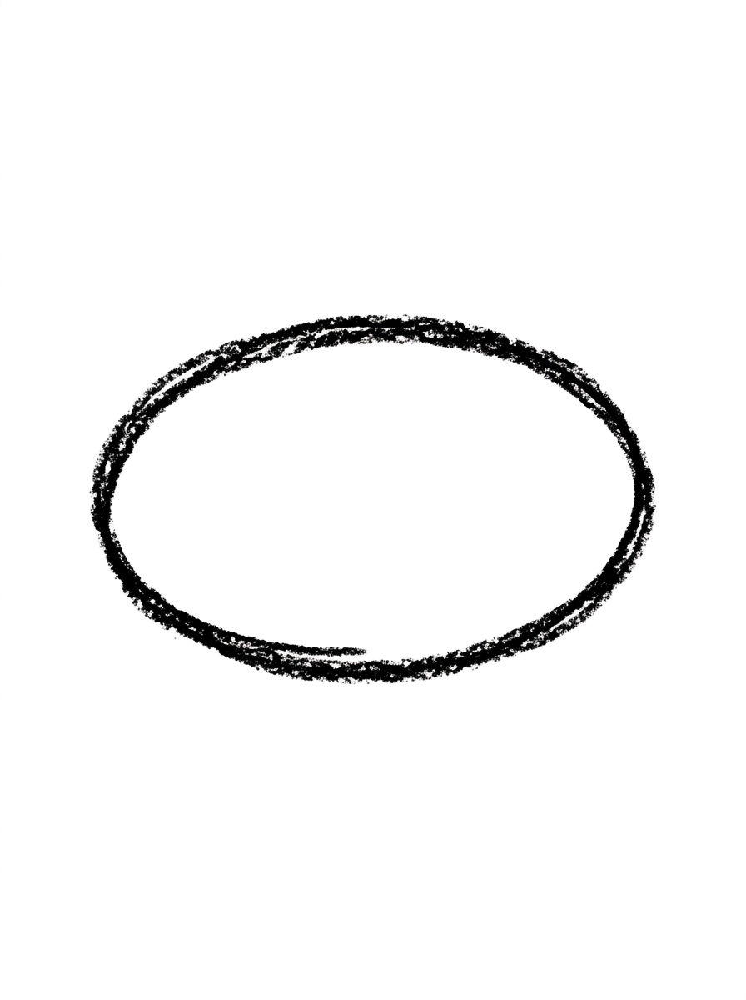
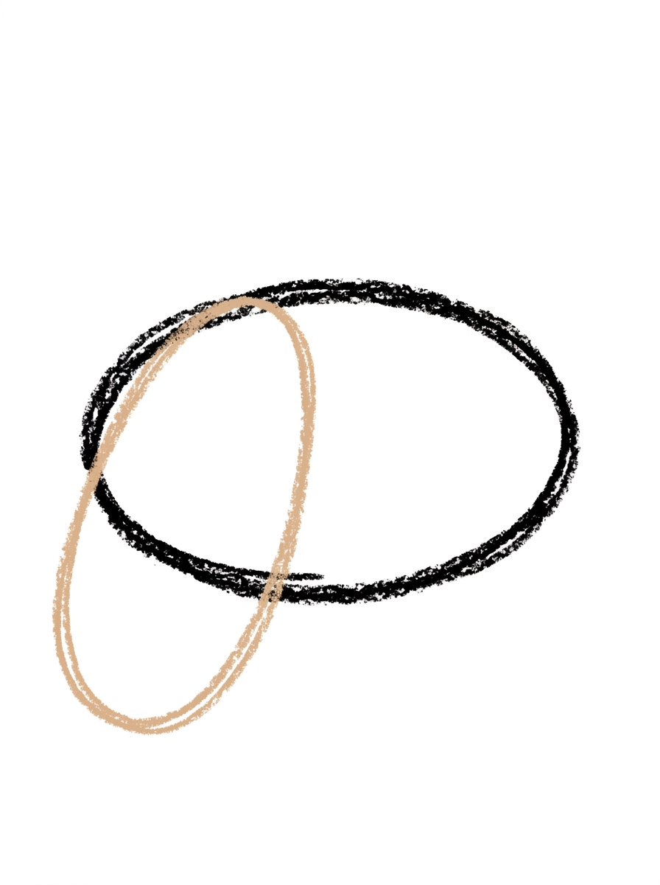
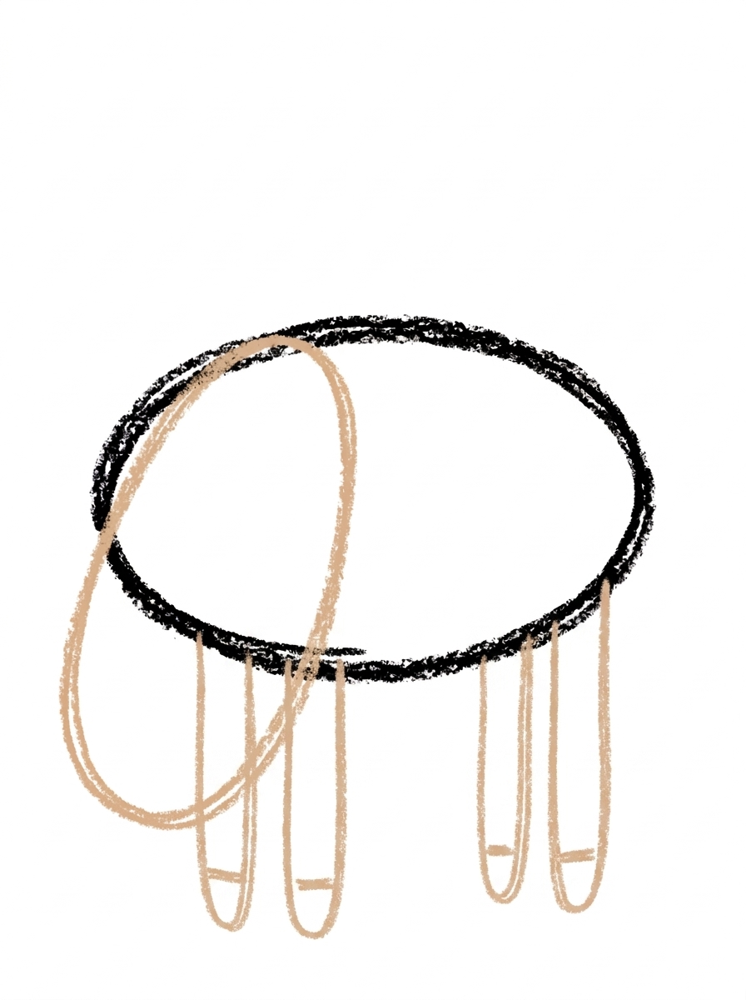
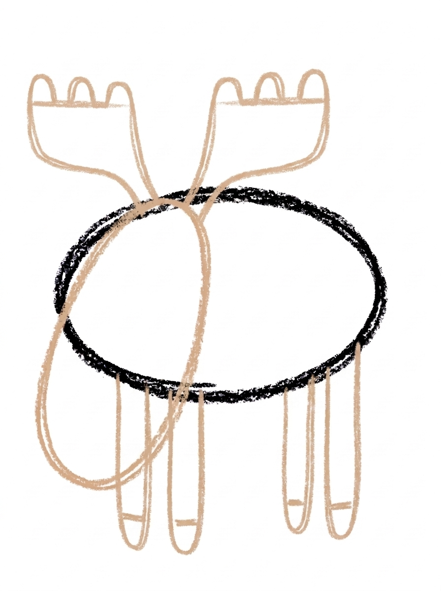
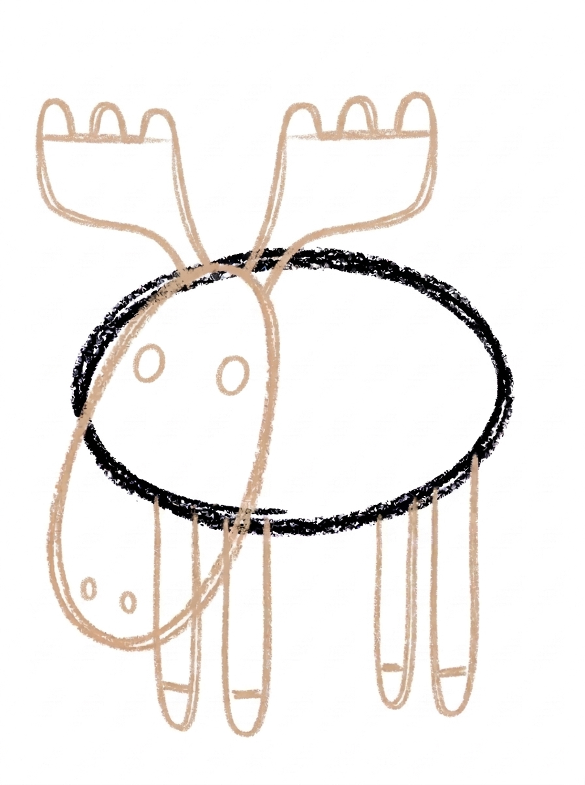
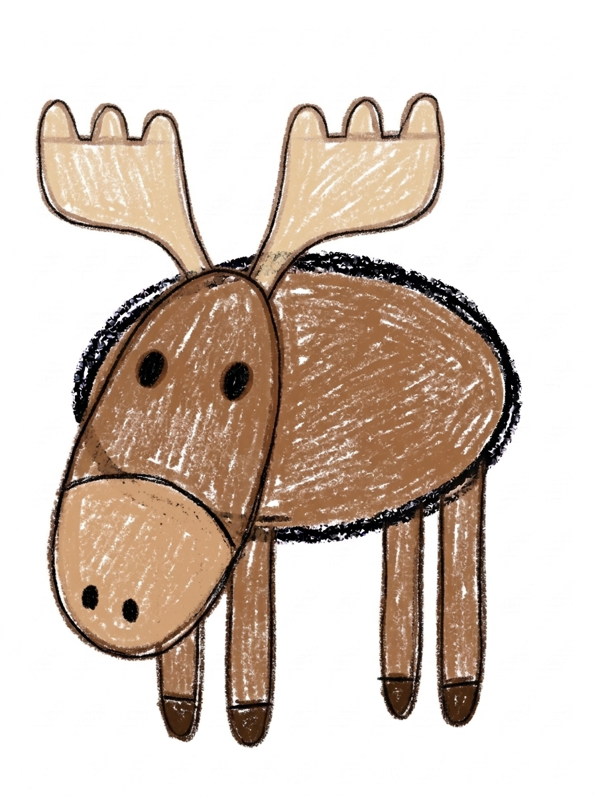

Moose Drawing for Kids How to Draw A Moose in 6 Easy Steps
Quick Answer
Draw a moose from big ovals: one sideways oval for the body, a long tilted oval head with a wide snout at the bottom, four legs with hoof lines, two wide flat antlers with bumpy tops, then dot eyes and nostrils before coloring. Made for ages 3 and up — no signup needed, just print and draw.
At a Glance
- Subject: How to draw a moose
- Ages: 3+
- Steps: 6 steps
- Time: ~15 min
- Difficulty: Easy
- Supplies: Paper, crayons
A moose is a wonderfully goofy animal to draw — a huge oval body, a long droopy snout, and two enormous flat antlers shaped like paddles. Everything is built from ovals and simple lines, so even though the finished moose looks impressive, every single step stays easy.
✏️ Draw Your Moose in 6 Easy Steps
One step per box — this step by step moose drawing shows each new part in a different color so kids can see exactly what changed.
Step 1: The Body

Draw one big oval lying on its side in the middle of your paper. This is your moose's body.
Step 2: The Head and Snout

Draw one long oval at the front end of the body, tilted so it hangs down, with its wide end at the bottom. This is the moose's head and its big snout.
Step 3: The Legs

Draw four long thin legs hanging straight down from the bottom of the body — two near the front and two near the back. Add one short line near the bottom of each leg for the hoof.
Step 4: The Antlers

Draw two wide flat antlers on top of the head, one on each side. Give each antler a flat top edge with three small bumps along the top.
Step 5: The Face

Draw two round dot eyes on the head, one on each side, and two small dot nostrils on the wide bottom end of the head.
Step 6: Color It In

Color your moose! Medium brown for the body, head and legs, lighter tan for the snout, pale tan for the antlers, dark brown for the hooves, and black for the eyes and nostrils. Great drawing!
📊 Moose Drawing by Age
Every age can join in — just adjust the job.
| Age | What they can do | Tip |
|---|---|---|
| 3-4 | Draw the body and head ovals and add straight legs, with antlers kept as two wide simple shapes. | At this age the antlers can be plain wide leaf shapes — flat and big is what reads as a moose. |
| 4-5 | Draw both ovals and the legs, and give each antler its flat top edge with three bumps along it. | The head oval tilts down with the wide end at the bottom — that droopy shape is what makes the snout look like a moose and not a cow. |
| 6+ | Draw the full moose independently and add a lake, pine trees or a smaller calf beside it. | Challenge them to draw the moose standing in a pond, with a wavy water line across its legs. |
🖨️ Download Your Free Moose Drawing Printable
The printable lays out all 6 steps one per box, big enough for little hands — kids draw right alongside each step.
⬇️ Open Free Printable 🖨️ Print🎁 Free printable for ages 3+
Moose Antler Dress-Up
Those big flat antlers are a perfect canvas. Decorate your finished moose's antlers with drawn flowers, leaves, berries, or a tiny bird perched on top — real moose would never allow it, but drawn moose are very patient. Count the decorations together, then count the antler bumps: three on each side. Older kids can take it further and draw the moose a whole northern forest of pine trees, a lake, and falling snow or autumn leaves to match your season.
What You'll Need to Draw A Moose
You need paper, a pencil and crayons or markers in a small range of browns: medium brown for the body, head and legs, lighter tan for the snout, pale tan for the antlers, dark brown for the hooves, and black for the eyes and nostrils. If you only have one brown, the moose still works — use it everywhere and press lighter for the snout and antlers.
What They're Learning
This tutorial practices ovals in contrasting proportions — a wide body oval against a long, tilted head oval — which teaches kids that the same shape changes meaning when it is stretched. The legs repeat the straight-line-plus-hoof pattern used across animal drawing, and the antlers introduce a flat edge with bumps, a new kind of outline. There is gentle counting throughout: four legs, two antlers, three bumps per antler, two eyes and two nostrils, all in matching pairs.
Make It Yours
Set the moose in its world: a wavy water line across its legs makes it a moose standing in a lake, and triangle pine trees behind it complete a northern forest. A winter moose can wear a drawn scarf, and an antler-free version with a small calf beside it makes a moose family. Kids also enjoy decorating the wide antlers with drawn flowers, leaves or a perched bird — the flatter and bigger the antlers, the better the canvas.
🛒 Our Favorite Drawing Supplies
These are the supplies we reach for in our own home — washable (because kids), quality paper, and enough colors to avoid fights.
As an Amazon Associate, MomYouNeedThis earns from qualifying purchases — at no extra cost to you.
💡 Moose Drawing Tips for Parents
Step 2 decides whether this reads as a moose. The head is one long oval tilted so it hangs down, wide end at the bottom — moose carry a long face with a big low snout, and nostrils are dotted on that wide bottom end in Step 5. If the head comes out upright or round, the animal drifts toward cow or horse, so it is worth redrawing just that oval before continuing; the rest of the steps will fall into place on a well-hung head.
Guard the antler shape in Step 4: wide and flat, like paddles, with a flat top edge and three bumps — not branching like a deer's. It is the single most moose-like feature on the page. Draw the first one together, then let your child do the second; uneven paddles are fine and honestly realistic, since no real moose has a perfectly matched pair.
✏️ Moose Drawing Step by Step
This moose drawing builds downward from the body: one big oval lying on its side, then the long head oval tilted so it hangs from the body's front end, then four legs underneath, with the antlers and face added to the hanging head in the last steps before colouring.
The legs decide whether the size of that body makes sense. They need to be long — a moose stands tall — and all four should end along the same level, as if the moose were standing on one flat piece of ground. Short legs turn the big body into a pig or a cow, and legs of four different lengths make the moose look as though it is tipping over.
The remedy is to draw a light ground line first — one straight pencil line under the body — and hang every leg down to it. Each leg then gets its short hoof line sitting on that ground line, and the moose stands level before the antlers even start.
See free moose printable for more.
✏️ One Shape Per Step, Six Steps Total
Count the bumps to check this moose drawing's antlers in Step 4: each antler has a flat top edge with three small bumps along it — three per side, six in total. Two bumps or four is easy to miss at drawing speed, and just as easy to put right before the face goes on.
In Step 5, use height to check the face. The two dot eyes sit up on the head, one on each side; the two dot nostrils sit much lower, on the wide bottom end of the hanging head. If all four dots cluster together in the middle of the head, the nostrils have wandered — they belong as far from the eyes as the head allows.
The colour check is about three shades staying in their lanes: medium brown for the body, head and legs, a lighter tan only on the snout, and pale tan only on the antlers. If the antlers come out in the same medium brown as the head behind them, they all but disappear — the pale tan is what lifts them off the page.
See free moose printable for more.
Moose Antlers Made Simple
Give the finished moose a place to live. Draw one straight line under its hooves for the shore, a second, wavy line below that for the water's edge, and two pine trees behind it — each one a green triangle standing on a short brown trunk line.
Nothing in the scene needs a new skill: the trees are triangles and lines, and the water is one wavy line. But the moose stops being a practice animal and becomes the middle of a northern-woods picture — a finished scene, not an exercise.
See free moose printable for more.
❓ Moose Drawing FAQs
What is the easiest way to draw a moose?
Use two ovals: a big sideways oval for the body and a long oval at the front, tilted down with its wide end at the bottom, for the head and snout. Add four legs, two wide flat antlers, dot eyes and nostrils — the six steps build it shape by shape.
What age is this moose drawing for?
It is made for ages 3 and up. Younger kids can handle the two ovals and legs with help on the antlers, while older kids can complete all six steps, including the bumpy antler tops, on their own.
What supplies do we need?
Paper and a pencil for drawing, plus crayons or markers for coloring: medium brown, lighter tan, pale tan, dark brown and black. That is the whole palette — moose are a three-browns animal, which keeps coloring simple.
Is the printable really free?
Yes — every printable on MomYouNeedThis is 100% free to download and print. No signup, no payment, just tap the download button.
How do I print it?
Open the free PDF and print it at 100% scale, not 'fit to page', so the step pictures come out at the size they were designed. One page is the whole tutorial, and you can print fresh copies whenever your child wants another try.
What is the difference between moose antlers and deer antlers?
Deer antlers branch like little trees, one line splitting into smaller lines. Moose antlers are wide flat paddles — in this tutorial, a flat top edge with three small bumps. If your child's moose has branching antlers it will quietly turn into a deer, so the flat paddle shape is the detail to protect.
Why does the moose's head hang down like that?
A moose's face is long, and its famous big nose and lips sit low at the end of it. Drawing the head as a long oval tilted down, wide end at the bottom, puts the snout exactly where a moose carries it, with the nostrils dotted on that wide bottom end in Step 5.
Do female moose have antlers?
Only the males, called bulls, grow antlers. A moose without antlers is a female, called a cow — so skipping Step 4 gives you a perfectly accurate moose, and adding a small antler-free calf beside her makes a moose family.
📚 Keep Exploring
- ✏️ All 53 Drawing Tutorials 53 free step-by-step drawing tutorials for kids.
- 🐾 Animal Coloring Free printable animal coloring pages for little learners.
- ✏️ Drawing Practice Free printable drawing pre-writing worksheet for toddlers.